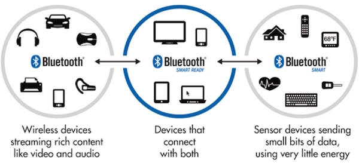

低功耗蓝牙 · 浪潮已起 远未及巅
背景介绍
现在一样东西能称得上智能硬件，它得有一个前提条件：能和手机通信。我们考虑物联网的几大热门无线通信技术：
- 蓝牙：低成本、低功耗，手机直接支持；
- WiFi：使用广泛、功耗略高，需要借助路由器上网，手机和WiFi设备通过英特网来通信；
- Zigbee：成本略高，需要借助网关上网，手机和WiFi设备通过英特网来通信；
得益于手机的直接支持，蓝牙设备可以无需借助外力就和手机通信，这让蓝牙技术在无线个人局域网(WPAN, Wireless Personal Area Network Communication)中得以广泛使用。近些年来，比较火热的可穿戴、智能家居、车载设备等领域也随处可见蓝牙技术的影子。
蓝牙技术联盟(Bluetooth SIG)在2012年推出了蓝牙4.0技术规范，它包含了三个方面：

- 传统蓝牙(Bluetooth)：适用于传输音频、音乐、文件等数据的场合。
- 低功耗蓝牙(Bluetooth Smart)：适用于小数据量传输，但对功耗又敏感的场合，低功耗蓝牙又称之为Bluetooth Low Energy(BLE)。
- 双模蓝牙(Bluetooth Smart Ready)：双模蓝牙是兼容传统蓝牙和低功耗蓝牙两种技术指标的规范，如手机和电脑就属于双模蓝牙设备。
低功耗蓝牙技术
低功耗蓝牙技术是自蓝牙4.0起的核心规范的组成部分，它是目前热门的物联网无线通信技术之一，其主要特点包括：
- 超低峰、平均和空闲模式功耗；
- 使用标准纽扣电池工作多年；
- 较低的物料成本；
- 协议简单，适用于小数据量传输；
- 多平台支持，如iOS和Android移动平台，以及OSX、Windows和Linux在内的大多数桌面平台；
JUMA的蓝牙技术服务
JUMA由多名蓝牙专家组成，它的使命是为客户提供专业的蓝牙技术服务，帮助客户以最优的方案将产品推出到市场，服务内容包括：
- 软件开发框架(SDK)：通过SDK把低功耗蓝牙开发门槛降到最低。SDK由嵌入式端和移动端两部分组成，其中嵌入式端支持Nordic、ST、Amiccom等主流BLE芯片。
- 硬件开发平台：推出NOVA、SMP、Cannon等开发平台。客户依据不同的应用场景，选择合适的硬件平台，开发自己的产品。
- 快速原型开发服务：基于SDK和硬件开发平台，JUMA根据客户需要实现产品原型，帮助客户快速验证方案和演示方案。
- 技术咨询和支持服务：基于多年在蓝牙领域的实践经验，JUMA帮助客户解决蓝牙开发过程中的各类技术问题，如：芯片选型、功耗优化、传输速率、连接稳定性等等。
技术服务咨询
请发邮件至hello@jumacc.com，客服人员会和您联系。